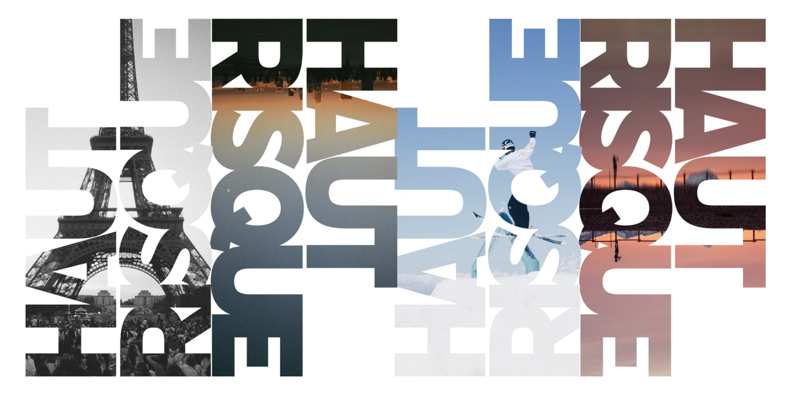

Grands espaces & histoires humainesDehors.
Dehors.
Tout simplement.
Un appareil photo, un peu de lumière et l’envie de raconter ce qui se passe dehors. Des personnes, du mouvement, et la nature autour.
Explorer les photographies ↘
Explorer les photographies ↘

Nature · Montagne · MouvementDes instants pris sur le vifHaut Risque — Portfolio
01 / Le portfolio
Fragments de dehors.
02 / Derrière l’appareilUn petit humain.
Un petit humain.
Un grand dehors.
Je m’appelle Paulin. J’aime les montagnes, les sorties qui s’improvisent et les histoires que l’on croise en chemin. La photographie est une manière d’en garder une trace.
Ce qui m’attire : une personne toute petite au milieu d’un paysage immense, un geste dans l’effort, un instant partagé. Avec Haut Risque, je rassemble ces regards pris au fil de mes sorties et des événements.
Paulin